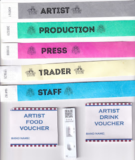
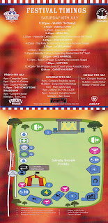
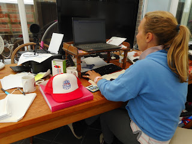
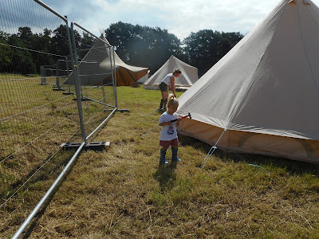
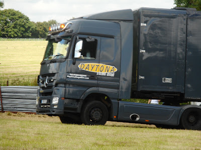
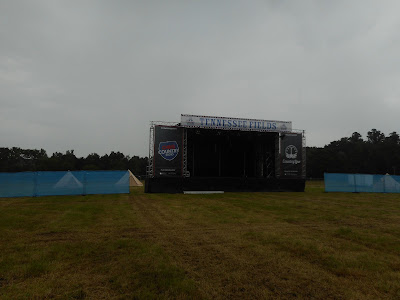

 |
| The tip of the organisational iceberg |
{kind=link}
Tomorrow (more accurately 53 minutes from now) it's my daughter Georgie's Tennessee Fields Festival, 2021. A country music festival to which she's expecting about 2000 people. 400 of them are campers, arriving tomorrow. The fun will begin with Country Karaoke, then the Honky Tonk Roadshow, Campfire social and the bars closing at midnight.
Saturday, the main festival day begins with a Songwriters' Workshop while the main gates open to welcome the bulk of the audience (all of whom will have to show proof of a negative Lateral Flow Test after which, as it's all outside in a very large field, the atmosphere should be fairly relaxed. Eight acts on the main stage alternate with six on the acoustic stage in the big top. There's line-dancing too but only one artist directly from the USA. Jessica Lynn and her band arrived a week ago and have been quarantining in a cottage ever since. Today the Tests to Release came though so tomorrow they'll actually get out and come to have a look at the venue where they'll be performing on Saturday night.
 |
| The Plan |
{kind=link}
I remember at the first running of the Festival in 2019, the headliner Lauren Alaina and her entourage arrived at about 0700 in a huge double decker coach. It was the first time Lauren (a significant presence on the US scene) had headlined and toured in the UK and her team were understandably nervous about the quality of this little Essex first festival in a field. I was so proud when they exclaimed about the excellence of the sound quality and kept asking Georgie 'Are you sure you haven't done this before?'
Since then there have been continual frustrations and even less than a fortnight ago she wondered whether this would be cancelled. But it isn't and the last of the paperwork (staff briefings, trader site inductions, car passes) are printing as I write. 34 minutes till tomorrow. We've done the wrist bands the food and drink vouchers; checked the public liability insurances, th risk assessments, the food hygiene certificates. Georgie's event management plan is a weighty file. The Big Top, the Tipis and the Toilets came yesterday; today the smaller tents, the bars, straw bales, more fencing, some merchandise and the main stage; tomorrow a Ferris wheel, the trade stands, the first of the artists and THE CAMPERS.

{kind=link}
Words fail me.
 |
| Glad of help putting up the artist changing tents |
{kind=link}
 |
| The stage arrives |
{kind=link}
 |
| It's not a lorry any more, it's a stage LIGHTS, MUSIC, ACTION!! |
{kind=link}